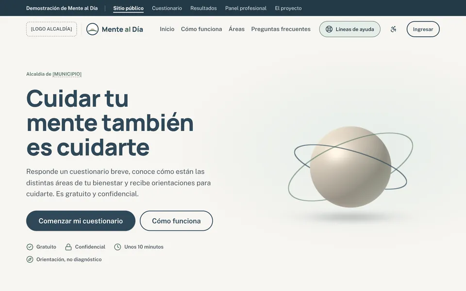
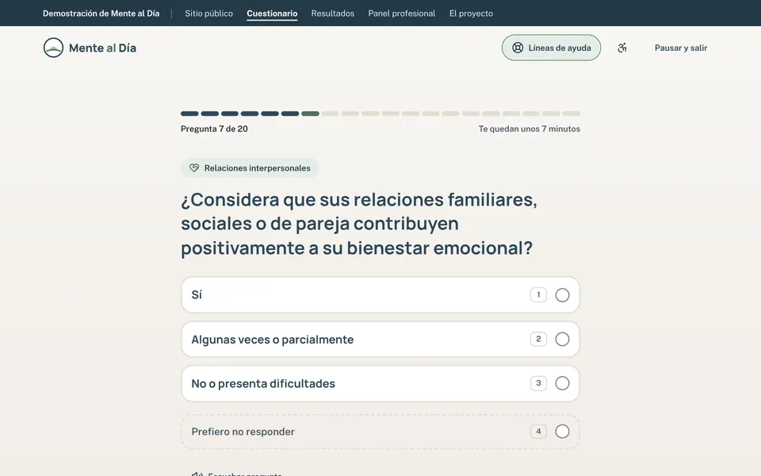
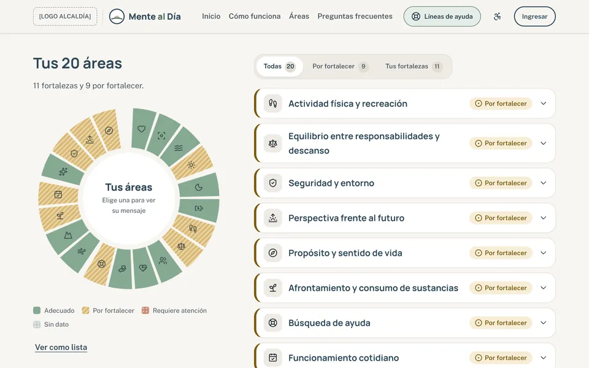
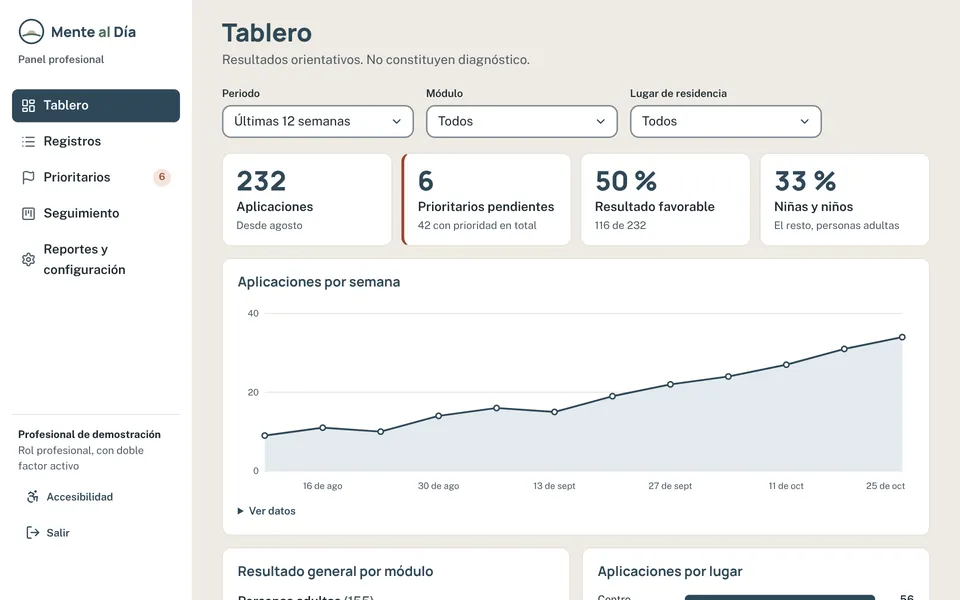

Alcaldía de [MUNICIPIO]
Lo que tendrá Mente al Día
Una plataforma web de orientación y bienestar emocional que funciona en cualquier celular, tableta o computador, sin descargar nada. Aquí ves qué incluye, cómo se construye por fases y qué falta definir con la Alcaldía.
Avance del proyecto
- Fase 0, hecha
- Fase 1, hecha
- Fase 2, hecha
- Fase 3, hecha
- Fase 4, hecha
- Fase 5, hecha
- Fase 6, hecha
- Fase 7, hecha
- Fase 8, en la demostración
- Fase 9, en la demostración
- Fase 10, por construir
- Fase 11, por construir
- 8 hechas en el código
- 2 que ya puedes probar aquí
- 2 por construir
La demostración usa las preguntas, los mensajes y las reglas reales del proyecto, con datos ficticios. También puedes ver la plataforma real en construcción (todavía sin base de datos: no guarda respuestas).
Recorre la demostración
Cuatro vistas de la plataforma. Todo funciona en el navegador y no se guarda nada en ningún servidor.
-

Sitio público
La cara de la plataforma para la ciudadanía: qué es, cómo funciona, las 20 áreas, preguntas frecuentes y líneas de ayuda.
Prueba: mover el orbe 3D y explorar las áreas por dimensión.
-

Cuestionario
Para personas adultas o para niñas y niños con un adulto de confianza. Una pregunta a la vez, con pausa y revisión final.
Prueba: responder con las teclas 1 a 4 o escuchar la pregunta.
-

Resultados
Mensaje general, rueda de bienestar, fortalezas y áreas para cuidar, con recomendaciones y rutas de apoyo.
Prueba: los tres ejemplos, incluido el que muestra la ruta de apoyo inmediato.
-

Panel profesional
El espacio privado de la administración: tablero, registros, casos prioritarios, seguimiento y reportes, con 232 registros ficticios. Se entra con el correo y la contraseña del administrador.
Prueba: ingresar, abrir un registro, cambiar su estado y agregar una nota.
Qué incluye la plataforma
Dos espacios con el mismo cuidado: uno abierto para la ciudadanía y otro privado para el equipo de la Alcaldía.
Para la ciudadanía
Sitio informativo con un toque 3D Hecha
Qué es, cómo funciona, las 20 áreas, privacidad, preguntas frecuentes y líneas de ayuda.
Registro y autorización Vista previa
Datos básicos, autorización de datos (Ley 1581 de 2012) sin casillas premarcadas y, para niñas y niños, la del acudiente.
Cuestionario de personas adultas En la demo
20 preguntas con cuatro opciones, progreso, pausa, guardado y lectura en voz alta.
Cuestionario de niñas y niños En la demo
20 preguntas con Sí, A veces y No, para responder de 6 a 11 años con un adulto de confianza.
Resultados por áreas En la demo
Mensaje general, rueda de bienestar, recomendaciones por área y versión para imprimir.
Ruta de apoyo inmediato En la demo
Si las respuestas lo indican, primero aparecen las líneas de ayuda y un mensaje de acompañamiento.
Barra de accesibilidad En la demo
Tamaño del texto, alto contraste, menos movimiento y lectura fácil.
Módulo de adolescentes Desactivado
Preparado en la plataforma; se activa cuando haya cuestionario y mensajes validados.
Para el equipo de la Alcaldía
Ingreso seguro Hecho
Cuentas por invitación, con roles y doble factor obligatorio.
Tablero de indicadores En la demo
Aplicaciones por semana, resultados por módulo y por lugar, y mapa de calor de las 20 áreas.
Registros y detalle En la demo
Búsqueda, filtros y la ficha de cada persona, con los datos de contacto ocultos hasta que se piden.
Casos prioritarios En la demo
Bandeja de casos con prioridad sin gestionar y alerta a los 3 días.
Seguimiento En la demo
Estados del caso, asignación y notas que no se editan ni se borran.
Reportes En la demo
Reporte agregado sin datos personales en Excel, CSV o PDF. El nominal, solo con motivo.
Configuración sin código Por construir
Reglas con versión, líneas de ayuda, lugares, módulos activos y textos legales.
Auditoría y derechos de los titulares Por construir
Quién vio, exportó o cambió qué y cuándo, y la bandeja de solicitudes de hábeas data.
Cómo avanza: 12 fases
Cada fase se entrega, se revisa y se aprueba antes de pasar a la siguiente. Las que dicen «En la demo» ya se pueden ver aquí; su versión final se conecta a la base de datos en la Fase 4.
- Hecha
Fase 0: Contexto maestro
Alcance, públicos, reglas de trabajo y lenguaje respetuoso acordados antes de programar.
- Hecha
Fase 1: Fundaciones y sistema de diseño
Paleta neutra «Piedra y Pizarra», tipografías, componentes, encabezado y pie institucional, y barra de accesibilidad.
- Hecha
Fase 2: Contenido del instrumento y motor de resultados
Preguntas, mensajes y reglas convertidos en datos versionados, y el motor que calcula los resultados, con pruebas.
- Hecha
Fase 3: Página de inicio institucional con 3D
Portada con el orbe 3D, las 20 áreas, públicos, privacidad y preguntas frecuentes. Ver el sitio público
- Hecha
Fase 4: Base de datos, autenticación y seguridad
Base de datos con permisos por rol, inicio de sesión, cálculo oficial de resultados en el servidor y registro de auditoría.
- Hecha
Fase 5: Registro, consentimiento y selección de grupo
Asistente por pasos que adapta los campos a la edad y obtiene las autorizaciones. Ya está en la plataforma; en la demo solo se ve una vista previa, sin pedir datos.
- Hecha
Fase 6: Experiencia del cuestionario
Una pregunta a la vez, progreso claro, pausa, atajos de teclado, lectura en voz alta y revisión antes de enviar. El envío no se duplica si falla la conexión. Probar el cuestionario
- Hecha
Fase 7: Resultados y ruta de atención especial
Mensaje general, rueda de bienestar, tarjetas por área, apoyo inmediato cuando aplica y versión imprimible. Ver un resultado de ejemplo
- En la demo
Fase 8: Panel profesional: tablero, registros y detalle
Tablero de indicadores, tabla de registros con búsqueda y filtros, ficha de cada caso y bandeja de prioritarios. Abrir el panel
- En la demo
Fase 9: Seguimiento, reportes, configuración y auditoría
Seguimiento de casos y reporte agregado ya se pueden probar; configuración, usuarios y auditoría llegan con la base de datos. Ver el seguimiento
- Por construir
Fase 10: Calidad: accesibilidad, rendimiento, seguridad y pruebas
Revisión de accesibilidad, velocidad en equipos modestos, seguridad y pruebas de punta a punta, con un informe de calidad.
- Por construir
Fase 11: Despliegue, documentación y entrega
Publicación en el dominio de la Alcaldía, copias de seguridad, monitoreo y manuales técnico, de administración y de contenido.
Lo que falta definir con la Alcaldía
Ninguno de estos puntos detiene la construcción: la plataforma queda lista para ajustarlos sin reprogramar. Están agrupados por quién los valida.
Equipo profesional
- Reglas de puntuación (hoy provisionales, versión 0.1).
- Áreas sensibles y criterios de prioridad.
- Mensajes del módulo infantil e instrucciones del cuestionario de adultos.
- Cuestionario y mensajes para adolescentes.
- Trato de «tú» o «usted» en todos los textos.
- Rangos de edad por grupo y pregunta de sexo en el módulo infantil.
- Descripciones de las áreas y casos que las reglas no cubren.
Secretaría de Salud
- Líneas de ayuda y rutas de atención locales (hoy hay valores de ejemplo).
Oficina jurídica
- Textos legales y autorizaciones (hoy en borrador).
- Tiempo de conservación de los datos.
Secretaría responsable
- Nombre del municipio, correo y teléfono de contacto.
- Estados y tiempos del seguimiento de casos.
- Si se activa «Quiero que un profesional me contacte», según la capacidad de respuesta.
Oficina TIC
- Alojamiento del sitio y región donde se guardan los datos.
- Si aplican la barra y el pie de GOV.CO.
Comunicaciones
- Logo oficial de la Alcaldía y manual de marca, si existe.
- Aprobación del logotipo provisional de Mente al Día.
Compromisos de la plataforma
Privacidad y seguridad
- Protección de datos desde el diseño, conforme a la Ley 1581 de 2012.
- Se piden solo los datos necesarios, con autorización expresa.
- Información cifrada al viajar y al guardarse.
- Cada persona del equipo ve solo lo que su rol permite, con doble factor.
- Ver datos de contacto, exportar o cambiar una regla queda en la auditoría.
- Las personas pueden consultar, actualizar o pedir que se eliminen sus datos.
Accesibilidad
- Pensada para cumplir las pautas WCAG 2.1 nivel AA.
- Primero el celular: funciona en equipos modestos y conexiones lentas.
- Se puede usar solo con el teclado y con lectores de pantalla.
- Texto más grande, alto contraste, menos movimiento y lectura fácil.
- Los niveles nunca se indican solo con color: siempre llevan texto e ícono.
- El 3D es discreto, se pausa con «menos movimiento» y tiene alternativa sin él.
Lenguaje y cuidado
- Orientación, no diagnóstico: así se dice en cada resultado.
- Lenguaje respetuoso, esperanzador y sin estigmas.
- Las líneas de ayuda están a un clic desde cualquier página.
- Las reglas que marcan prioridad las define el equipo profesional.
Con qué se construye
- Sitio y panel
- React 19 con TypeScript, Vite y Tailwind CSS 4.
- Componentes
- Radix UI, accesibles por teclado y lector de pantalla.
- 3D
- Three.js con React Three Fiber, solo en la portada y al terminar el cuestionario.
- Datos y acceso
- Supabase: base de datos PostgreSQL, inicio de sesión, permisos por fila y funciones en el servidor.
- Pruebas
- Vitest para el motor de resultados y Playwright con axe para recorridos y accesibilidad.
Sobre esta demostración
Es una versión de muestra, sin base de datos, para que cualquier persona vea la plataforma desde su celular o computador. Usa el mismo contenido y el mismo motor de resultados del código del proyecto.
- Tus respuestas solo quedan en esta pestaña del navegador y se borran al cerrarla.
- El panel usa 232 registros inventados: no hay nombres, correos ni teléfonos.
- Los datos entre corchetes, como [MUNICIPIO], esperan la información oficial.
Páginas legales
La plataforma tendrá estas páginas. Sus textos están en borrador y los aprueba la Oficina jurídica antes del lanzamiento, por eso no se publican en la demostración.
Política de tratamiento de datos personales
Qué datos se recogen, para qué, quién responde y cómo ejercer tus derechos.
Autorización de datos sensibles
La que se pide antes del cuestionario, y la del acudiente para niñas y niños.
Términos y condiciones
Alcance del servicio: orientación, no diagnóstico ni atención de emergencias.
Declaración de accesibilidad
Nivel de cumplimiento, limitaciones conocidas y cómo reportar una barrera.